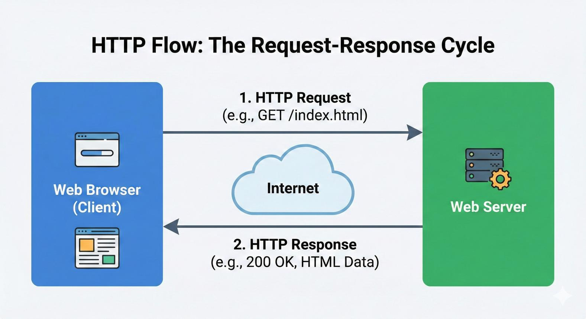

Welcome
HTTP (Hypertext Transfer Protocol) is one of the most important technologies used on the internet. It allows web browsers and servers to communicate by sending requests and receiving responses.
Whether you're reading articles, shopping online, watching videos, or logging into social media, HTTP works behind the scenes to deliver information quickly and efficiently.
What You'll Learn
- How HTTP works
- How browsers communicate with web servers
- HTTP requests and responses
- HTTP methods such as GET and POST
- Common status codes
- The evolution from HTTP/0.9 to HTTP/3
- Why HTTPS is important
Explore the Website
Visit each section to build your understanding of HTTP.
- HTTP Basics – Learn how HTTP requests and responses work.
- Evolution of HTTP – Discover how HTTP has changed over time.
- Key Concepts – Review important networking terms.
- Knowledge Quiz – Test what you've learned.
- References – View research sources.
- About Me – Learn about the creator of this project.
Did You Know?
HTTP is a stateless protocol, meaning every request is treated independently. Technologies like cookies and sessions help websites remember users between requests.
Modern websites also rely on HTTP APIs to allow different applications and services to communicate with each other over the internet.
Test Your Knowledge
After exploring the website, visit the interactive quiz to test your understanding of HTTP concepts. You'll receive immediate feedback, see the correct answers, and have the opportunity to retake the quiz.
Take the QuizProject Goal
This website was created for IT3203 Web Development at Kennesaw State University. The goal is to explain HTTP in a simple and engaging way while demonstrating HTML, CSS, responsive design, and JavaScript skills.